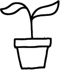

Makkelijke planten
Ben je op zoek naar mooie planten, maar heb je geen groene vingers? Geen probleem! Hier vind je een collectie van makkelijk te verzorgen planten!
leer ze kennen


De kamerplanten bij de winkel Wildernis worden zonder pesticiden en kunstmest gekweekt, waardoor je een gezondere en milieuvriendelijke keuze maakt. Door voor biologische planten te kiezen, draag je bij aan een betere wereld, zowel binnen als buiten je huis. Heb je niet veel plantenkennis? Geen probleem! Deze site zal je helpen!
Biologische en duurzame planten hebben voordelen die verder gaan dan alleen je interieur opfrissen! Ze zijn op een manier gekweekt die beter is voor het milieu, vaak zonder schadelijke chemische bestrijdingsmiddelen. Dit betekent dat er minder schadelijke stoffen in de grond en in het water terechtkomen. Voor biologische planten wordt ook vaak gewerkt met milieuvriendelijke potgrond en natuurlijke bemesting. Als je kiest voor duurzame planten, ondersteun je kwekers die bewust omgaan met energie en water, en soms zelfs gebruik maken van lokale teelt om transportuitstoot te verminderen. Dus met duurzame of biologische planten maak je niet alleen je eigen leefomgeving mooier, maar draag je ook bij aan een schonere en gezondere planeet!
Ben je op zoek naar mooie planten, maar heb je geen groene vingers? Geen probleem! Hier vind je een collectie van makkelijk te verzorgen planten!
leer ze kennenWil je meer leren over de verzorging van deze planten? Haal het beste uit je planten doormiddel van onze tips!
onze tips